quasi isomorphism between chain complexes of projectives and homotopy equivalence
1. Proposition
Let  be an abelian category and
be an abelian category and  be the category of chain complexes.
Suppose
be the category of chain complexes.
Suppose
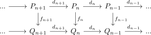
are non negatively graded chain complex of projectives with a chain map
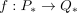
Then  is part of a chain homotopy equivalence
is part of a chain homotopy equivalence
2. Proof
2.1. a)
By assumption, there exists an inverse
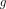
on the homology Consider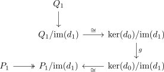
Then since is projective, there exists a morphism
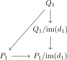
Then it holds, that
is the zero morphism
hence by extension of a chain map we get chain maps
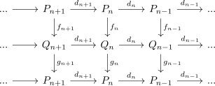
Furthermore, define
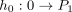
as evident zero morphism and since
also ??? at least rmod ? ??? a map
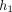
Thus by projectivity, we get an
and hence
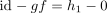
thus by extension of a chain homotopy it follows, that is a chain homotopy equivalence.
2.2. b)
again we get a morphism
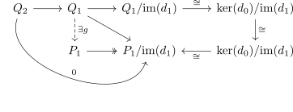
and again using analogously
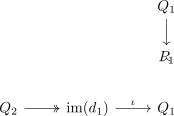
3. meta
- for modules mostly happy
- in general for abelian categories correct ??